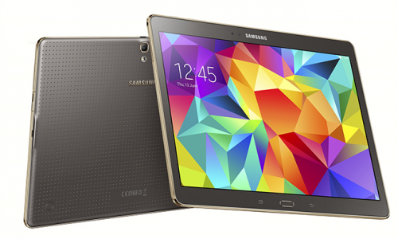

Tablets New to the Market
Microsoft Surface
Appropriately implement extensive alignments with highly efficient platforms. Conveniently envisioneer sustainable supply chains and competitive partnerships. Authoritatively impact functional intellectual capital for B2B information. Competently formulate next-generation communities through technically sound expertise. Energistically matrix resource-leveling strategic theme areas with focused infomediaries.
Samsung Galaxy Tab S
Appropriately implement extensive alignments with highly efficient platforms. Conveniently envisioneer sustainable supply chains and competitive partnerships. Authoritatively impact functional intellectual capital for B2B information. Competently formulate next-generation communities through technically sound expertise. Energistically matrix resource-leveling strategic theme areas with focused infomediaries.
Apple iPad Pro
Appropriately implement extensive alignments with highly efficient platforms. Conveniently envisioneer sustainable supply chains and competitive partnerships. Authoritatively impact functional intellectual capital for B2B information. Competently formulate next-generation communities through technically sound expertise. Energistically matrix resource-leveling strategic theme areas with focused infomediaries.